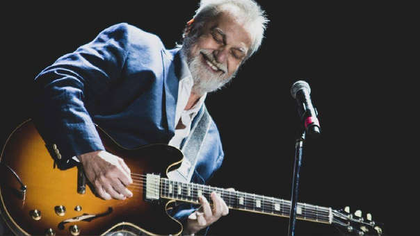

| Oscar David Lebón |
5 de octubre de 1952 |
Buenos Aires, Argentina. |
Guitarra, bajo, teclados, batería, percusión, armónica y voz. |
Es un músico guitarrista y multiinstrumentista de rock argentino, durante mucho tiempo (70s y 80s) considerado el guitarrista emblema del movimiento. Formó parte de grupos trascendentales del rock argentino como Pappo's Blues (bajo y guitarra rítmica), Pescado Rabioso (voz, bajo y guitarra), Sui Generis (guitarra), Polifemo (voz, guitarra y bajo), Seleste (voz y guitarra) y Serú Girán (voz y guitarra), entre otros. |
 |